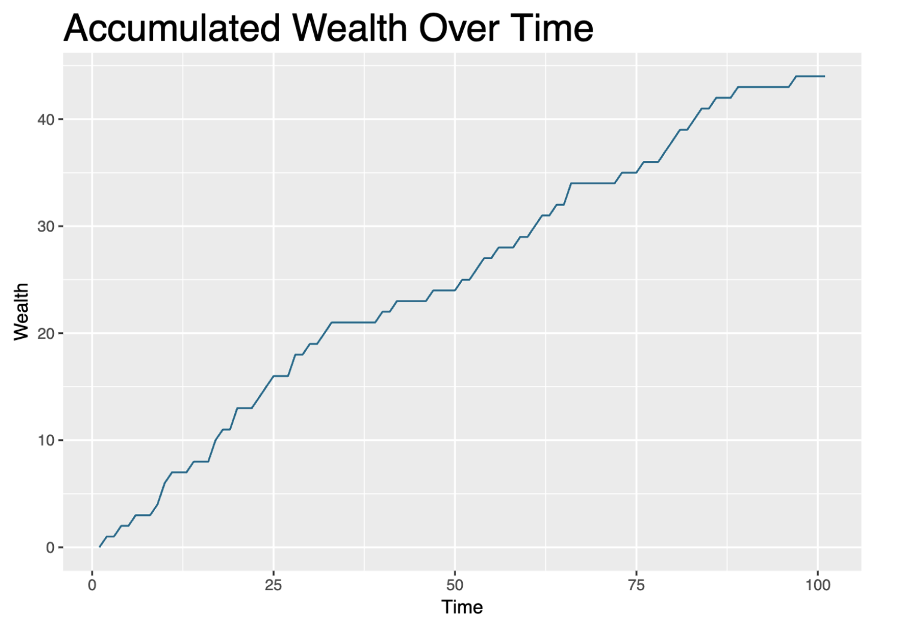

Agent-based modeling (ABM) is a fascinating approach to understanding complex systems by simulating interactions among individual agents. Through my latest work, documented in this report, I explored how agents, driven by simple rules, can collectively give rise to intricate, large-scale behaviors. Let me walk you through the key insights and methodologies of this project.
$ cat projects/abm.txt
Agent Based Modelling: Simulating Social Dynamics
What is Agent-Based Modeling?
Agent-based modeling is a computational framework where individual entities, called agents, follow a set of predefined rules. These agents interact with each other and their environment, creating emergent behaviors that often can't be easily predicted from the rules governing individual agents. This type of modeling is especially useful in fields like economics, sociology, biology, and urban planning, where interactions between components are central to understanding the system as a whole.
The ABM Approach in My Work
The project I worked on focused on simulating social dynamics through agent-based modeling. Specifically, I aimed to replicate how simple decision-making processes at the individual level can aggregate to produce societal phenomena like cooperation, competition, or even conflict.
At the core of this project were agents representing individuals in a simulated society. These agents were given simple rules of interaction, such as:
- Movement within a grid environment
- Resource acquisition or competition for limited resources
- Cooperative behaviors, where some agents opted to share resources or cooperate under specific conditions.
The agents in this model operated within a spatial environment, allowing for local interactions that are critical in understanding how global patterns emerge from local behaviors.
Key Components of the Model
In this ABM setup, a few critical elements determined the dynamics of the system:
Rules and Decision-Making: Each agent was governed by simple rules that dictated its behavior based on its immediate surroundings and interactions with other agents. These could include gathering resources, moving towards or away from other agents, and making decisions based on proximity to certain goals or threats.
Environment: The agents existed within a spatial grid, and their behavior could change depending on their position and local interactions. This environmental setup is essential in capturing the realistic constraints and conditions that influence agent behavior.
Emergent Properties: One of the most exciting aspects of ABM is the emergent properties that arise from the individual interactions. In this project, certain unexpected patterns emerged, such as clusters of cooperation or resource competition "hotspots" that arose spontaneously, driven by the agents' individual decisions.
The Algorithm
The final agent-based algorithm can be broken down into the following steps:
- Let $$i$$ represent the $$i$$-th agent at time $$t$$, with $$i = 1, 2, \dots, 1000$$ and $$t = 1, 2, \dots, 100$$. Randomly locate each agent at coordinates $$(x_i, y_i)$$, where $$x_i \sim U(0, 1)$$ and $$y_i \sim U(0, 1)$$.
- Randomly locate 1000 objects $$k_1, k_2, \dots, k_{1000}$$ at coordinates $$(x_k, y_k)$$, where $$x_k \sim U(-10, 10)$$ and $$y_k \sim U(-10, 10)$$.
- At time $$t+1$$, each agent $$i$$ moves a random distance in both $$x$$ and $$y$$ directions:
$$x_{i,\text{new}} = x_{i,t} + d_{i,x}, \quad y_{i,\text{new}} = y_{i,t} + d_{i,y}$$where $$d_{i,x} \sim U(-1, 1)$$ and $$d_{i,y} \sim U(-1, 1)$$.
- Each agent $$i$$ identifies the $$f$$-closest neighbors and adjusts its position by halving the average distance to them. The new coordinates at time $$t+1$$ are:
$$x_{i,t+1} = 0.5(x_{i,\text{new}} + \bar{x}_{f}), \quad y_{i,t+1} = 0.5(y_{i,\text{new}} + \bar{y}_{f})$$where $$\bar{x}_f$$ and $$\bar{y}_f$$ are the average $$x$$- and $$y$$-coordinates of the $$f$$-closest neighbors of agent $$i$$. Euclidean distance is used to determine these neighbors.
- Compute the Euclidean distance $$g(i,k)$$ between each agent $$i$$ and object $$k$$:
$$g(i + d, k) = \sqrt{(x_{i,\text{new}} - x_k)^2 + (y_{i,\text{new}} - y_k)^2}$$If $$g(i + d, k) < a$$ (where $$a$$ is a threshold), the wealth of agent $$i$$ increases:$$w_{i,t+1} = w_{i,t} + 1$$
In this model, the parameters used are $$f = 5$$ (5 closest neighbors) and $$a = 0.01$$ (distance threshold).
Analyzing Results: Emergence of Complex Behavior
What makes agent-based modeling truly powerful is the ability to observe how individual actions can create complex societal patterns. For example, when agents were tasked with competing for limited resources, some groups developed cooperative strategies to outcompete others. This cooperation was not coded explicitly into the system but rather emerged organically from the rules governing each agent's interactions.
Another interesting observation came from introducing slight variations in agent decision-making. With just minor changes, the societal outcomes shifted dramatically, leading to divergent paths such as widespread cooperation or, alternatively, conflict and resource depletion.

Wealth accumulation over time for agents in the simulation
Applications of Agent-Based Models
This work demonstrates the potential of ABM for simulating real-world scenarios. By adjusting the rules and parameters, these models can be applied to various domains:
- Economics: To simulate market dynamics, consumer behavior, or the spread of innovations.
- Social Sciences: To study group behaviors, opinion formation, and the spread of ideas or trends.
- Epidemiology: For modeling the spread of diseases and the impact of social behaviors on health outcomes.
Future Directions
Moving forward, I plan to refine this model by adding layers of complexity, such as multi-agent types, varying resource types, and more nuanced decision-making processes. Furthermore, incorporating machine learning techniques could allow agents to evolve and adapt their behaviors over time, bringing the simulation closer to real-world dynamics.
Final Thoughts
Agent-based modeling (ABM) offers a dynamic way to simulate complex systems using individual agents that interact based on defined rules. In a recent study, 1000 agents were placed in a bounded space with 1000 randomly positioned objects, and their behaviors were observed over 100 time steps. The findings reveal fascinating patterns in how individual movements, neighbor interactions, and resource accumulation lead to emergent behavior.
The agents moved randomly, adjusted their positions based on the proximity of their neighbors, and accumulated wealth when they came close to objects. This wealth represents a form of success in interacting with the environment. The key discoveries include:
- Emergent Behavior: Even simple rules, such as agents moving based on neighbor proximity, led to complex patterns like clustering and wealth disparities over time. The simulation showed how agents gradually spread out, forming groups while competing for resources.
- Importance of Neighbor Influence: By halving the distance to their nearest neighbors, agents tended to move towards a more central position relative to their local group. This process allowed agents to maintain group cohesion, but also revealed limitations in exploring the full space.
- Randomness and Wealth Accumulation: Random movement combined with the proximity-based wealth rule demonstrated that wealth distribution became uneven. Some agents consistently moved closer to objects, accumulating wealth, while others lagged behind.
- Parameter Sensitivity: The model's performance was sensitive to parameters like the number of neighbors considered (set to 5) and the proximity threshold for wealth accumulation (set to 0.01). These choices impacted how agents spread out and how resources were gathered, offering insights into how tweaking these values could simulate different real-world scenarios.
In summary, this agent-based model shows the power of local interactions in generating complex, emergent behavior. The model suggests that agents acting on basic movement rules can mimic behaviors seen in natural systems, such as resource competition and group formation, and offers a tool for studying dynamics in various fields like economics, ecology, and social sciences.
For those interested in diving deeper into the technical details, feel free to check out my full report here.
Appendix: Python Code
Here's a Python implementation of this ABM:
from typing import List, Optional
from pydantic import BaseModel, Field, validator
import random
class Position(BaseModel):
x: int
y: int
@validator("x", "y")
def must_be_non_negative(cls, value: int) -> int:
if value < 0:
raise ValueError("Position values must be non-negative")
return value
class Agent(BaseModel):
id: int
position: Position
resource_capacity: int = Field(10, ge=0)
resources_collected: int = Field(0, ge=0)
movement_range: int = Field(1, ge=0)
def move(self, grid_size: int) -> None:
"""Move agent randomly within its movement range."""
new_x = max(0, min(self.position.x + random.randint(-self.movement_range, self.movement_range), grid_size - 1))
new_y = max(0, min(self.position.y + random.randint(-self.movement_range, self.movement_range), grid_size - 1))
self.position = Position(x=new_x, y=new_y)
def gather_resources(self, resources_nearby: int) -> None:
"""Gather resources if nearby."""
gather_amount = min(self.resource_capacity - self.resources_collected, resources_nearby)
self.resources_collected += gather_amount
class Environment(BaseModel):
grid_size: int
agents: List[Agent]
resource_grid: List[List[int]]
def step(self) -> None:
"""Simulate one timestep of the environment."""
for agent in self.agents:
agent.move(self.grid_size)
x, y = agent.position.x, agent.position.y
resources_at_location = self.resource_grid[x][y]
agent.gather_resources(resources_at_location)
self.resource_grid[x][y] = max(0, self.resource_grid[x][y] - agent.resources_collected)
def add_resources(self, amount: int) -> None:
"""Add resources to random locations."""
for _ in range(amount):
x = random.randint(0, self.grid_size - 1)
y = random.randint(0, self.grid_size - 1)
self.resource_grid[x][y] += 1
def initialize_environment(grid_size: int, num_agents: int, initial_resources: int) -> Environment:
"""Initialize the environment with agents and resources."""
agents = [Agent(id=i, position=Position(x=random.randint(0, grid_size - 1),
y=random.randint(0, grid_size - 1)))
for i in range(num_agents)]
resource_grid = [[0 for _ in range(grid_size)] for _ in range(grid_size)]
env = Environment(grid_size=grid_size, agents=agents, resource_grid=resource_grid)
env.add_resources(initial_resources)
return env
if __name__ == "__main__":
grid_size = 10
num_agents = 5
initial_resources = 50
environment = initialize_environment(grid_size, num_agents, initial_resources)
for _ in range(10): # Simulate 10 timesteps
environment.step()
# Optionally print environment status or track agent behaviors